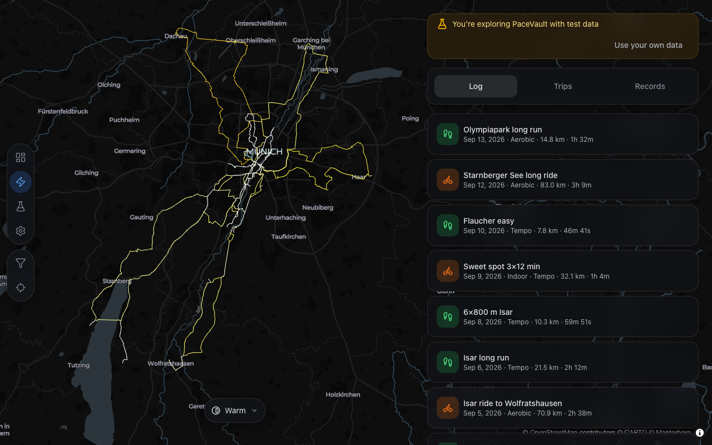
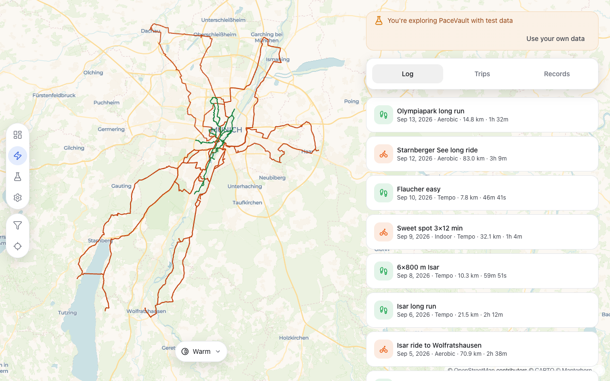
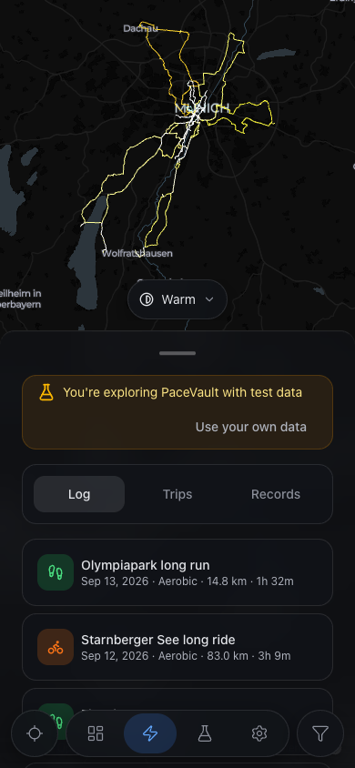
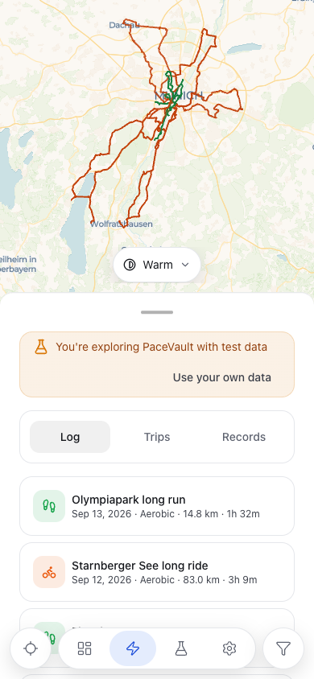
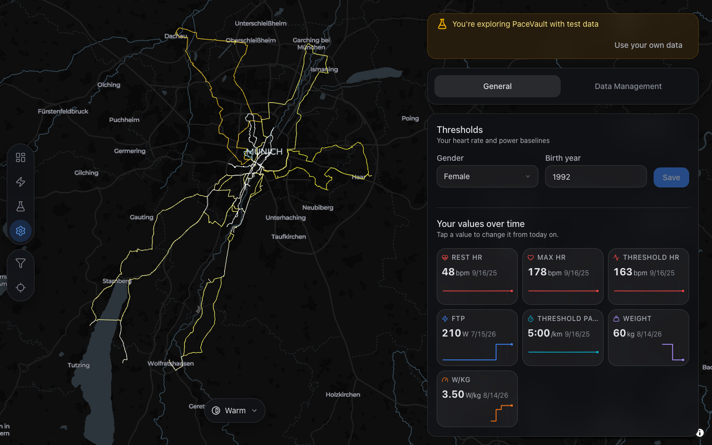
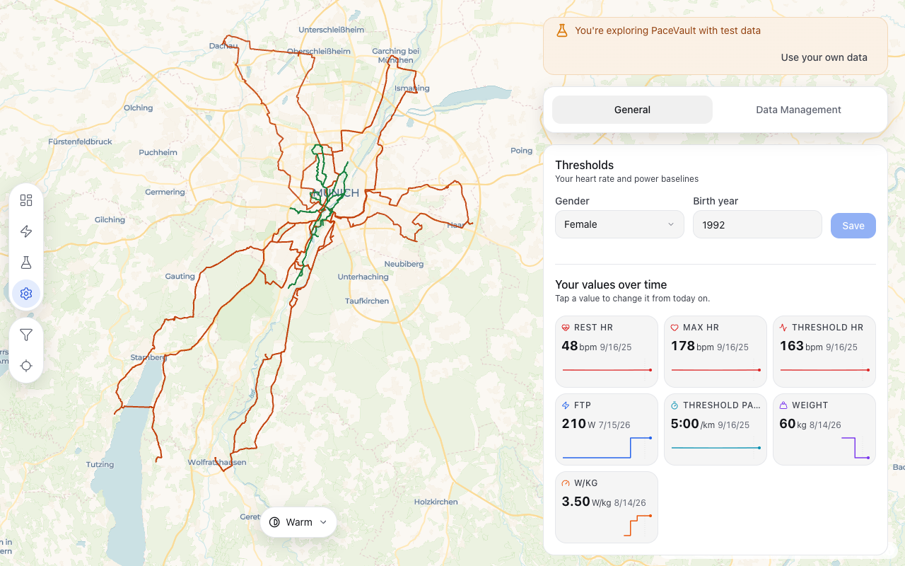
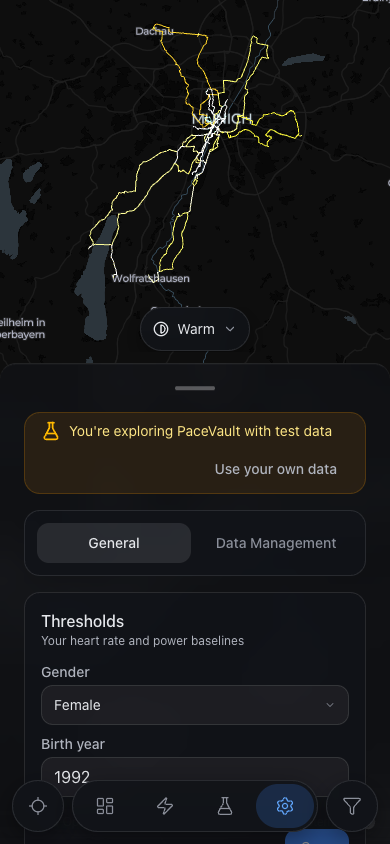
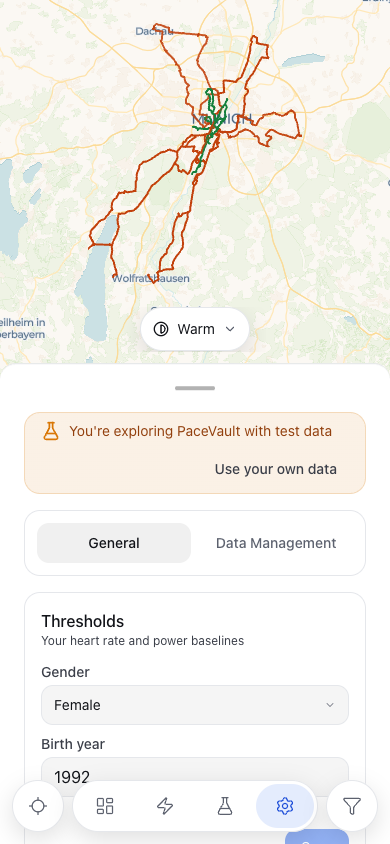

C1Palette A light theme (step 2a)
A [data-theme='light'] block gives every role token a light value: white page and cards, #111318 text, light dividers, black overlays instead of white ones, and a near-black selected tile (Q1 palette A).
tokens.ts holds three sets (base for board and banner, dark and light for the app) and picks the one the page loaded with.
packages/ui/src/theme.css:266-413; packages/ui/src/lib/tokens.ts:250-267
Desktop · 1280 × 800 · sessions · today (dark) → lightdrag to compare


BeforeAfterPhone · 390 × 844 · sessions · today (dark) → light


Desktop · 1280 × 800 · settings · today (dark) → lightdrag to compare


BeforeAfterPhone · 390 × 844 · settings · today (dark) → light

